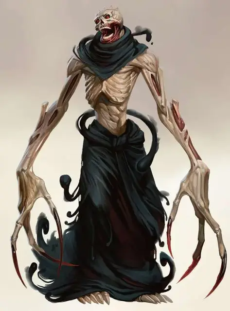

Костелап
Boneclaw
Большая Нежить, обычно хаотично-злая

Класс Доспеха 16 (природный доспех)
Хиты 150 (20к10 + 40)
Скорость 40 футов
| мод | спас | ||
|---|---|---|---|
| СИЛ | 19 | +4 | +4 |
| ЛОВ | 16 | +3 | +7 |
| ТЕЛ | 15 | +2 | +6 |
| мод | спас | ||
|---|---|---|---|
| ИНТ | 13 | +1 | +1 |
| МДР | 15 | +2 | +6 |
| ХАР | 9 | −1 | −1 |
Навыки Восприятие +6, Скрытность +7
Сопротивление урону некротическая энергия, холод; дробящий, колющий, рубящий
Иммунитет к состояниям отравление, паралич, очарование, испуг, истощение
Чувства тёмное зрение 60 футов, пассивное Восприятие 16
Языки Общий
Опасность 12 (8400 опыта)
Бонус мастерства +4
Среда обитания Арктика, Город, Пустыня
Особенности
Языки. Знает Общий и один язык, на котором говорит его хозяин.
Восстановление. Пока его хозяин жив, уничтоженный костелап получает новое тело с полными хитами через 1к10 часов. Тело появляется в пределах 1 мили от хозяина.
Необычная природа. Костелапне нуждается в воздухе, еде, питье и сне.
Действия
Мультиатака. Костелап совершает две атаки когтями.
Пронзающие когти. Рукопашная атака оружием: +8 к попаданию, досягаемость 15 футов, одна цель. Попадание: 20 (3к10 + 4) колющего урона плюс 11 (2к10) урона некротической энергией. Если цель является существом, то костелап может подтянуть её к себе на 10 футов и сделать её схваченной (Сл высвобождения 14). У костелапа два набора когтей. Когда когти хватают цель, они могут атаковать только её.
Теневой прыжок (перезарядка 5-6). Если костелап находится во тьме или в тусклом свете, все существа по выбору костелапа в пределах 15 футов от него должны преуспеть в спасброске Телосложения Сл 14 или получить 34 (5к12 + 2) урона некротической энергией.
После этого костелап магически телепортируется на расстояние до 60 футов в свободное пространство, которое может видеть. Он может забрать с собой одно схваченное им существо, телепортируя и его в свободное пространство в пределах 5 футов от точки назначения. Места, куда телепортируется и костелап и его цель должны находиться во тьме или в тусклом свете.
Бонусные действия
Теневая скрытность. Во тьме или при тусклом свете костелап может бонусным действием совершить действие Засада.
Реакции
Смертельная досягаемость. Если существо, передвигаясь, оказывается в зоне досягаемости костелапа, он может атаковать эту цель. Если атака попадает по цели, то костелап может совершить вторую атаку когтями по этой же цели.
Описание
Волшебник, который попытался превратиться в лича, но вместо этого, потерпел неудачу, превратившись в костелапа. Эта отвратительная и кряхтящая разновидность нежити имеет пару схожих черт с личом, однако, тогда как личи – это бессмертные мастера магии, а костелапы являются всего лишь рабами тьмы, ненависти и боли.
Самой важной частью ритуала перевоплощения является этап, в котором дух будущего лича переходит в специально подготовленную филактерию. Если заклинатель слишком слаб как физически, так и магически, чтобы подчинить духа, то вместо этого дух ищет себе новую оболочку – гуманоида, находящегося в пределах нескольких миль, с необычайно чёрствым сердцем. Дух привязывается к испоганенной сущности гуманоида, превратив того в костелапа, нечто, навечно порабощённого желаниями своего хозяина. Оно появляется из ниоткуда рядом со своим хозяином по его велению, либо даже перед тем, как хозяин призовёт его, и исполняет желания, удовлетворяя нужды хозяина.
Костелап служит только злым персонажам. Если его господин находит искупление или добросовестно отказывается следовать по тропе злых деяний, то костелап исчезает навсегда. Костелап не может умереть, пока жив его господин. Чтобы ни случилось с телом костелапа, оно в считанные часы восстанавливает свою прежнюю форму и продолжает служить своего хозяину.
Служа своему хозяину, костелапы получают непомерное удовольствие от причинения своей жертве ужасающей боли. Они прячутся словно паучки в тёмных уголках и выжидают появление своей жертвы, чтобы схватить её своими длинными костлявыми конечностями. Единожды пронзённое существо утаскивается в темноту, чтобы быть разрезанным на части.